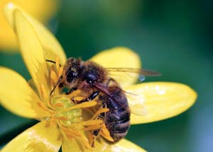

The future of America’s food supply relies on a species that’s under stress. Beginning in the winter of 2006, millions of honeybees started dying or vanishing. A strange epidemic, colony collapse disorder (CCD), is wiping out these vital pollinators and causing concerns for the fate of our food supply.
Chip Taylor, professor of insect ecology at the University of Kansas, and other experts say multiple forces are responsible for colony collapse disorder, including weakened immunity, pesticides, parasites and poor nutrition. Some research implicates a virus known as Israeli Acute Paralysis Virus. The good news is that the disorder does not appear to be as severe in backyard beehives, which are not stressed in the same way commercial hives are. The industrial agriculture system ships bee colonies around the country to serve various monocrops and growing seasons, which stresses the bees.
Because the tiny workhorses are responsible for pollinating one-third of U.S. crop species, honeybees account for many of the fruits, vegetables, nuts, seeds and fibers produced in the United States, with the value of their services exceeding $15 billion.
Silence of the Bees, a PBS Nature series episode, reveals the agricultural role of these amazing six-legged creatures. The episode also includes an interview with expert Dennis van Engelsdorp.
Because 71 percent of all colony deaths can be attributed to non-CCD causes, according to van Engelsdorp, the stinging issue is general pollinator health. “The effort to look at the impacts of pesticides has revealed a surprisingly large number of pesticides in pollen, wax and the bees themselves; some of these at high levels,” van Engelsdorp says. “These pesticides are used in agriculture and sometimes by the beekeepers themselves. We have initiated investigations into the effects of pesticides, potential synergistic effects of multiple pesticides, the impact of pesticides in combination with other stress factors, as well as the use of irradiation to mitigate pesticide residues.”
If you keep bees at home, we'd love to hear from you regarding the health of your colonies. Share your experiences on our Honeybee Decline page. - Mother
|
 ISTOCKPHOTO/OLGA BROVINA Colony collapse disorder doesn’t appear to threaten backyard hives’ future. |
|
|